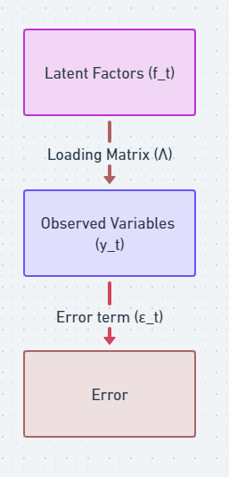
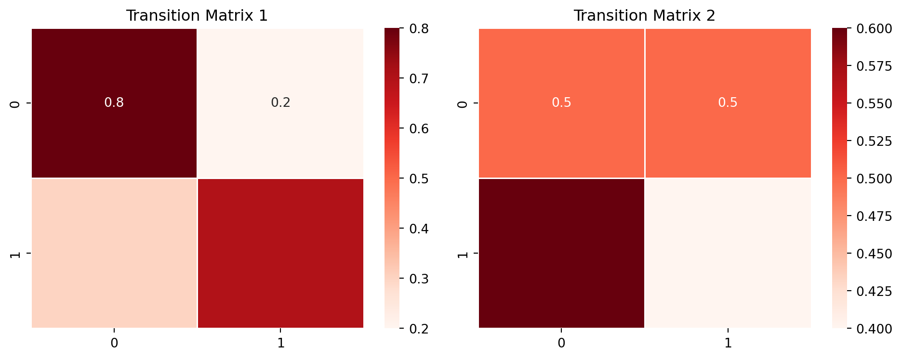
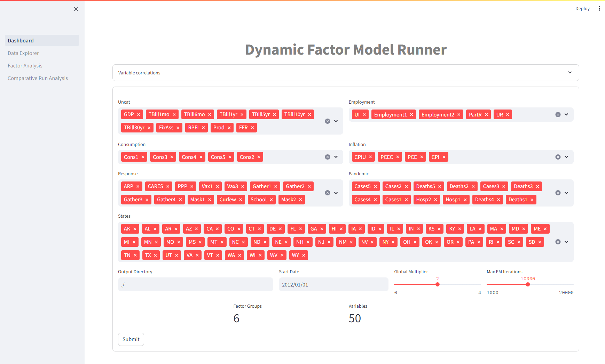
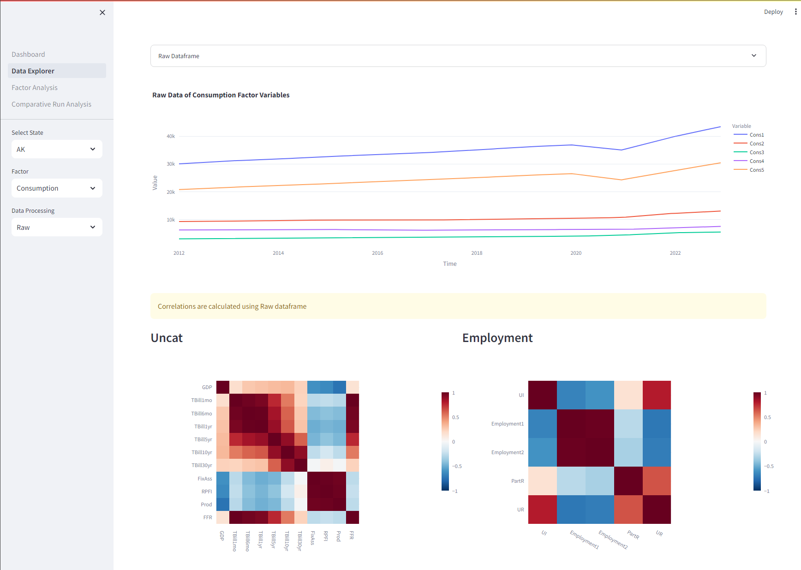
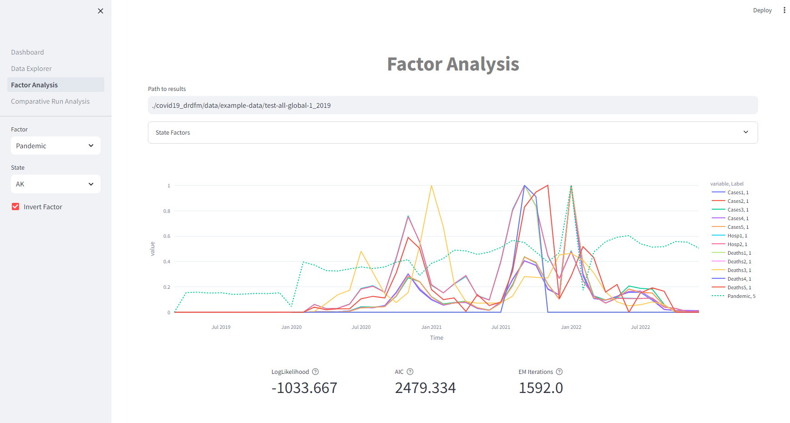
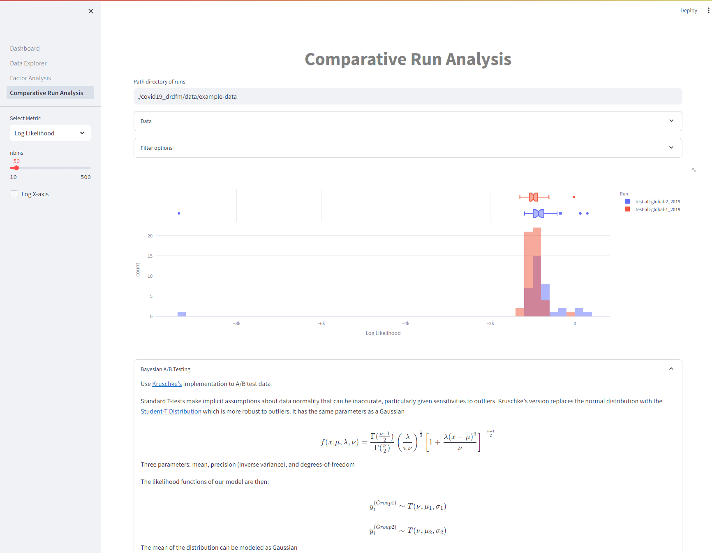

Overview, Python Package, and Interactive Analysis
Math
Modeling
Python
Author
John Vivian, Aaron Cooke, Josh Fitzgerald
Published
March 9, 2024
Understanding the Economic Impact of COVID-19 Through Data
As the world grapples with the ongoing effects of the COVID-19 pandemic, it is necessary to leverage advanced analytical tools to understand its economic impacts. Our project leverages Dynamic Factor Models (DFMs) to uncover hidden patterns and relationships in large amounts of economic data generated during this period. This presentation will introduce you to the core concepts of DFMs, the specific challenges posed by COVID-19 data, and the Python package we designed to address these challenges.
Dynamic Factor Models
Dynamic Factor Models: A Primer
Dynamic Factor Models are powerful statistical tools that help us make sense of complex, interconnected data. By identifying latent factors that influence observed variables over time, DFMs can reveal the underlying trends and dynamics of economic systems. This approach is particularly valuable in the context of COVID-19, where traditional models may struggle to account for rapidly changing conditions.
The Model at a Glance
Consider the basic Dynamic Factor Model equation:
\[y_t = \Lambda f_t + \epsilon_t\]
Here’s what each symbol represents:
\(y_t\): The observed variables at time \(t\).
\(\Lambda\): The loading matrix, showing how each latent factor influences observed variables.
\(f_t\): The latent factors, representing underlying trends.
\(\epsilon_t\): The error term, accounting for discrepancies between model predictions and observed data.
Visualizing the Model
The latent factors (\(f_t\)) influence the observed variables (\(y_t\)) through the loading matrix (\(\Lambda\)), and the error term (\(\epsilon_t\)) is associated with the observed variables.
The loading matrix is a bridge that connects the latent factors, which are unobservable, to the observed variables, providing a mathematical representation of how the latent factors influence the observed data

Latent Factors and Observed Variables
Relationship between latent factors and observed variables via loading matrix
By incorporating autoregressive components, we can capture the evolving nature of economic relationships during the pandemic. This advanced model formulation allows for a more accurate representation of the data, enabling better forecasts and insights.
Where \(y_t\) is observed, \(f_t\) are unobserved latent factors, \(x_t\) are optional (unused for our case) exogenous variables, and the dynamic evolution of latent factors is expressed using the transition matrix \(A\) with \(\eta_t\) representing new information or random shocks. \(u_t\) is the error or “idiosyncratic” process
. . .
This model is then cast into state space form and the unobserved factors estimated via the Kalman filter. The likelihood can be evaluated as a byproduct of the filtering recursions with maximum likelihood estimation used to estimate the parameters.
Extending the Model with Time Dynamics
\[f_t = A f_{t-1} + \eta_t\]
\(A\): Transition matrix \(\eta_t\): Innovation term
The transition matrix, often denoted as \(A\), is a square matrix that governs the temporal evolution of the latent factors
Each element of the matrix represents the influence of one latent factor at the current time on the corresponding latent factor at the next time point
The elements of the transition matrix \(A\) determine how each latent factor at the previous time point contributes to the latent factors at the current time point
Values in the diagonal of \(A\) represent the persistence of each latent factor over time
Off-diagonal elements indicate the influence of one latent factor on another
Interpreting Transition Matrices
Examining the first transition matrix
# echo: falseimport numpy as npimport seaborn as snsimport matplotlib.pyplot as plt# Set seed for reproducibilitynp.random.seed(42)# Generate two different transition matricestransition_matrix_1 = np.array([[0.8, 0.2], [0.3, 0.7]])transition_matrix_2 = np.array([[0.5, 0.5], [0.6, 0.4]])# Create a figure with subplotsfig, axs = plt.subplots(1, 2, figsize=(10, 4))# Plot heatmap for Transition Matrix 1sns.heatmap(transition_matrix_1, annot=True, cmap="Reds", linewidths=.5, ax=axs[0])axs[0].set_title('Transition Matrix 1')# Plot heatmap for Transition Matrix 2sns.heatmap(transition_matrix_2, annot=True, cmap="Reds", linewidths=.5, ax=axs[1])axs[1].set_title('Transition Matrix 2')# Adjust layoutplt.tight_layout()plt.show()
The diagonal elements (0.8 and 0.7) are relatively high, indicating a strong persistence of each latent factor over time.
The off-diagonal elements (0.2 and 0.3) suggest moderate influence of one latent factor on the other, allowing for some interaction between the two factors.
Summary: latent factors have a tendency to persist, with some interdependence.
Interpreting Transition Matrices
Examining the second transition matrix
# echo: falseimport numpy as npimport seaborn as snsimport matplotlib.pyplot as plt# Set seed for reproducibilitynp.random.seed(42)# Generate two different transition matricestransition_matrix_1 = np.array([[0.8, 0.2], [0.3, 0.7]])transition_matrix_2 = np.array([[0.5, 0.5], [0.6, 0.4]])# Create a figure with subplotsfig, axs = plt.subplots(1, 2, figsize=(10, 4))# Plot heatmap for Transition Matrix 1sns.heatmap(transition_matrix_1, annot=True, cmap="Reds", linewidths=.5, ax=axs[0])axs[0].set_title('Transition Matrix 1')# Plot heatmap for Transition Matrix 2sns.heatmap(transition_matrix_2, annot=True, cmap="Reds", linewidths=.5, ax=axs[1])axs[1].set_title('Transition Matrix 2')# Adjust layoutplt.tight_layout()plt.show()

The diagonal elements (0.5 and 0.4) are lower compared to Transition Matrix 1, suggesting less persistence of each latent factor over time.
The off-diagonal elements (0.5 and 0.6) indicate a relatively stronger influence of one latent factor on the other compared to Transition Matrix 1.
Summary: latent factors are less likely to persist and may be influenced more by each other, allowing for a more dynamic and responsive behavior.
Factor Constraints: Enhancing Model Interpretability
By applying constraints to the model parameters, we can improve interpretability and reduce complexity while incorporating prior domain knowledge about variable relationships.
For example, setting certain elements of the loading matrix to zero might suggest that specific observed variables are not influenced by particular latent factors.
Factor Constraints
Factor loading constraint example
Dep. variable
Global.1
Pandemic
Employment
Consumption
Inflation
Supply_1
X
Supply_7
X
Monetary_5
X
Monetary_9
X
Supply_2
X
X
Supply_3
X
X
Demand_7
X
X
Demand_3
X
X
Demand_5
X
X
Monetary_2
X
X
Monetary_1
X
X
Pandemic_2
X
X
Pandemic_9
X
X
Our Python Package: Modeling and Analysis
Implementation
We are developing a Python package that simplifies the process of applying DFMs to COVID-19 economic data. The package includes features such as:
Poetry for dependency management
CI with GitHub Actions
Pre-commit hooks with pre-commit
Code quality with black & ruff
Testing and coverage with pytest and codecov
Documentation with MkDocs
Compatibility testing for multiple versions of Python with Tox
Containerization with Docker
Dashboard
Our package contains a simplified interface for running parameterized DFM models

Dashboard - Data Explorer
Our package includes a comprehensive dashboard with features for data exploration, factor analysis, and comparative model testing. Here’s a sneak peek at what you can do:

Dashboard - Factor Analysis
Dive deep into the relationships between latent factors and observed variables. Understand how economic trends evolve over time.

Dashboard - Comparative Analysis
Test and compare different model configurations to identify the most accurate representations of the data.

Future Work
Our next steps involve incorporating the insights gained from DFMs into Synthetic Control Model to further refine our understanding of COVID-19’s economic impact by exploring counter-factual statements. We are garnering feedback on our work and are hoping to submit for publication within the year!